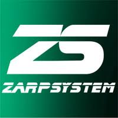
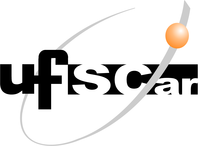

Olá, eu sou
Desenvolvedor de Software Sênior
+25 anos transformando ideias em código
Os pilares da minha vida são Deus e minha família. Sou católico e guio meus valores baseados na doutrina católica, casado com a Ana, minha amada esposa, e tenho uma filha maravilhosa chamada Rafaela.
Sou curioso por natureza — gosto de me desafiar a conhecer e explorar novas experiências, principalmente envolvendo tecnologias.
Não consigo conviver com explicações feitas pela metade. Gosto de buscar a fundo as razões e motivos para determinadas tecnologias serem como são.
Apaixonado pela cultura cervejeira, gosto de apreciar uma boa cerveja artesanal, especialmente um American IPA de qualidade.
Na área de TI desde 1998 — dos primeiros códigos em Clipper às práticas mais modernas de desenvolvimento de software.
Iniciei uma jornada incrível em uma empresa muito desafiadora que me provocou a evoluir de forma acelerada, deixando para trás um skill focado em aplicações legadas para o uso das práticas mais modernas de desenvolvimento de software.
Hoje me sinto totalmente aderente a tudo de mais moderno que o mercado pratica — desde processos ágeis até as melhores práticas de codificação e esteiras de entrega contínua.
Grande empresa de TI global com grandes clientes espalhados por todo o mundo. Atuei em projetos evolutivos atendendo ao cliente Claro S/A, com o desafio de suportar o crescimento e evoluir o grande legado.
Acredito que a melhor forma de aprender é ensinando — por meio de um programa interno de treinamentos, ofereci capacitações em Node.js, Java e SAFe.

Uma das experiências mais intensas da carreira, atuando como Gerente de Projetos em uma consultoria em fase de grandes transformações. Mesmo à frente como líder de times, nunca abri mão do desenvolvimento.
Trabalhando em clientes como Odontoprev e Editora Abril, participei de projetos que contribuíram significativamente para meu crescimento profissional.

Universidade Federal de São Carlos — UFSCar
2017 — 2019
No final de 2017 senti a necessidade de voltar à academia para aprofundar estudos nas novas tecnologias utilizadas no mercado. A pós-graduação me proporcionou contato com as tecnologias mais atuais de desenvolvimento e colaboração em equipe, aumentando minha confiança como profissional.